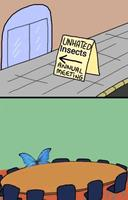

0
0
0

An anonymous reader quotes a report from 404 Media: A new, bipartisan bill introduced (PDF) by Democratic Senator of California Adam Schiff and endorsed by the biggest AI developers in the world -- including OpenAI, Google, and Microsoft -- would change the K-12 curriculum to shoehorn in "AI literacy," something that young people and teachers alike already hate in schools. The Literacy in Future Technologies Artificial Intelligence, or LIFT AI Act, would empower the new director of the National Science Foundation (NSF) to make grant awards "on a merit-reviewed, competitive basis to institutions of higher education or nonprofit organizations (or a consortium thereof) to support research activities to develop educational curricula, instructional material, teacher professional development, and evaluation methods for AI literacy at the K-12 level," the bill says.
It defines AI literacy as using AI; specifically, "having the age-appropriate knowledge and ability to use artificial intelligence effectively, to critically interpret outputs, to solve problems in an AI-enabled world, and to mitigate potential risks." The bill is endorsed by the American Federation of Teachers, Google, OpenAI, Information Technology Industry Council, Software & Information Industry Association, Microsoft, and HP Inc. [...] The grant would support "AI literacy evaluation tools and resources for educators assessing proficiency in AI literacy," according to the bill. It would also fund "professional development courses and experiences in AI literacy," and the development of "hands-on learning tools to assist in developing and improving AI literacy." Most importantly for real-world implications, it would fund changing the existing curriculum "to incorporate AI literacy where appropriate, including responsible use of AI in learning."
Read more of this story at Slashdot.
Astronomers have identified 27 potential new circumbinary planets -- worlds that orbit two stars, like Star Wars' Tatooine. "To date, only about 18 circumbinary planets ... had been identified in the universe," reports the Guardian. "More than 6,000 planets have been discovered that orbit single stars, like Earth does around the sun." The Guardian reports: In a timely publication for May 4, also known as Star Wars Day, scientists have identified nearly 30 more candidate planets, whose distances range from 650 to 18,000 light years away from Earth. [...] More than half of the stars in the universe exist in binary or multiple star systems. The researchers instead used a method known as "apsidal precession," searching for a wobble between stars that orbit around and eclipse each other.
"If we monitor the exact timing of these eclipses ... that can tell us that there's something else going on in the system," said Margo Thornton, the study's lead author and a PhD candidate at UNSW. After eliminating other factors such as the rotation and gravitational pull of the two stars, the team identified 36 star systems out of 1,590 whose behavior could only be explained by a third body. For "27 of those objects, it is possible that they are planet mass," Thornton said.
More research into their spectra -- the light they emit -- was needed to formally confirm them as circumbinary planets, she said. "It's just a matter of: what is the mass of it? Is it a planet? Is it a brown dwarf? Is it a star?" The team discovered the potential planets -- which likely range from Neptune-sized to ten times heavier than Jupiter -- using data from Nasa's Transiting Exoplanet Survey Satellite, a planet-hunting space telescope that launched in 2018. The research was published in the Monthly Notices of the Royal Astronomical Society.
Read more of this story at Slashdot.
Age verification became mandatory for chat access on Roblox in January — and Friday morning Quartz reported it's apparently impacted the company's financials:
Roblox cut its full-year 2026 bookings forecast by roughly $900 million at the midpoint on Thursday, blaming stronger-than-expected headwinds from its mandatory age-verification rollout on an audience that skews heavily toward children and teenagers. Full-year 2026 bookings are now projected at $7.33 billion to $7.60 billion, a range that sits roughly $900 million below the prior guidance of $8.28 billion to $8.55 billion; analysts had expected $8.38 billion, according to Yahoo Finance. Roblox stock fell almost 22% in premarket trading....
Daily active users rose 35% year over year to 132 million, while hours engaged climbed 43% to 31 billion hours... Daily Active Users and hours engaged fell below forecasts of 143.8 million and 33.68 billion, respectively, according to Yahoo Finance... Users who have not completed age checks have faced restricted communication features, and the process has weighed on the platform's ability to bring in new users. Russia's blocking of the platform, which took effect in December 2025, added further drag on user growth, according to Yahoo Finance. As of the end of the first quarter, 51% of global daily active users had completed age verification, with 65% of U.S. users having done so, Roblox said....
The safety push has come with legal costs. Roblox accrued $57 million in the first quarter for settlements and settlement proposals with certain states over youth-related consumer protection and digital safety matters, with payments structured over multiple years, the company said.
Roblox acknowledged in a letter to shareholders that "our aggressive push to enhance safety lowers our expectations for topline growth in 2026." But they argued that it also "makes our platform fundamentally better and amplifies the long-term growth potential of Roblox through more effective content targeting, tailored communication experiences, and improved community sentiment."
Read more of this story at Slashdot.
"So yesterday the Devteam (it is always the Devteam) released version 5.0 of legendary and venerable rogueike compuer game NetHack," writes the Rogue-like games column @Play. "It is 39 years old..."
MilenCent (Slashdot reader #219,397) writes: In addition to play changes it's left for players to discover, this version updates the code to compile with C99, makes it much easier to cross compile the code for other systems than the one running, and now uses Lua for its dungeon generation. Happy hacking!
For new players, "Nethack 5.0 now has an optional tutorial in the early phases of the game that might help you," notes the Rogue-like games column @Play:
Three systems binaries are provided: Windows, MS-DOS and Amiga. Yes, Nethack still supports MS-DOS, and yes, it still supports classic Amiga: it explicitly supports AmigaDOS 3.0, meaning it can still run on 68000 machines... That these are the only systems they provide binaries for shouldn't be seen as an indication that these are the "most important" platforms for Nethack, it's more that, since it's entirely open source, building it yourself is entirely possible, and more expected than with most software. Nethack can be built for Linux, Windows 8-11, AmigaDOS, MacOS (I'm not sure if this includes classic Mac too but it might), Windows CE (wow), OS/2 (additional wow), BeOS, VMS and multiple Unixes... Another option is to play through public Nethack servers. The most popular of these are probably alt.org and Hardfought.
Read more of this story at Slashdot.
"Vibe coding just got a whole lot more adorable," writes Engadget:
OpenAI introduced AI-generated pets to the Codex app, its agentic tool that helps with coding. These "optional animated companions" don't do any coding themselves, but serve as a floating overlay that can tell you what Codex is working on, notify you when Codex completes a task or whether it needs your input on something. The new feature lets developers see Codex's active thread, without having to switch away from your current open app.
"The feature ships with eight built-in variations — including a cat and dog," reports Mashable. "But the more interesting play is the custom pet creator."
Users can prompt Codex directly to generate their own companion, then share it online. A quick scroll through the homepage reveals the community has already gotten to work. Current creations include Goku, Patrick Star, Microsoft's long-retired Clippy, OpenAI CEO Sam Altman, Anthropic CEO Dario Amodei, and — naturally — a goblin.
There's also Grogu, Dobby, a tiny Bob Rossi, and a "Doge-style Shiba Inu dog"...
Read more of this story at Slashdot.
OpenAI president Greg Brockman's testimony dominated the fifth day of the trial for Elon Musk's lawsuit against the AI company. Brockman took the witness stand on Monday, disclosing that his stake in OpenAI is worth nearly $30 billion, despite not personally investing money in OpenAI. The judge also declined to admit a pretrial text in which Musk allegedly warned Brockman that he and Altman would become "the most hated men in America." From a report: Brockman's disclosure would put him on the Forbes list of the world's richest people, with wealth comparable to Melinda French Gates. [...] Late Sunday, OpenAI lawyers tried to admit as evidence a text message Musk sent to Brockman two days before the trial began. According to a court filing -- which did not include the actual text exchange -- Musk sent a message to Brockman to gauge interest in settlement.
When Brockman replied that both sides should drop their respective claims, Musk shot back, according to the filing, "By the end of this week, you and Sam will be the most hated men in America. If you insist, so it will be." Judge Yvonne Gonzalez Rogers, who is overseeing the trial, did not admit the text exchange as evidence. Brockman acknowledged that he had promised to personally donate $100,000 to OpenAI's charity but never did. In explaining the delay, Brockman put the onus on Altman: "I asked Sam when I should donate this, and he said he would let me know," reports Business Insider.
The first witness to testify on Monday was Stuart Russell, an artificial intelligence expert who teaches computer science at the University of California, Berkeley. "The most memorable part of Russell's testimony was when he talked about how much Musk's legal team paid him," notes Business Insider. "He received an eye-popping $5,000 per hour for 40 hours of preparatory work. Expert witnesses in high-profile cases typically make between $500 to $1,000 per hour."
Recap:
Musk Concludes Testimony At OpenAI Trial (Day Four)
Elon Musk Says OpenAI Betrayed Him, Clashes With Company's Attorney (Day Three)
Musk Testifies OpenAI Was Created As Nonprofit To Counter Google (Day Two)
Elon Musk and OpenAI CEO Sam Altman Head To Court (Day One)
Read more of this story at Slashdot.
The Trump administration is reportedly considering an executive order to create a working group that could review advanced AI models before public release. The shift follows concerns over Anthropic's powerful Mythos model and its cyber capabilities, with officials weighing whether the government should get early access to frontier models without necessarily blocking their release. The New York Times reports: In meetings last week, White House officials told executives from Anthropic, Google and OpenAI about some of those plans, people briefed on the conversations said. The working group is likely to consider a number of oversight approaches, officials said. But a review process could be similar to one being developed in Britain, which has assigned several government bodies to ensure that A.I. models meet certain safety standards, people in the tech industry and the administration said.
The discussions signal a stark reversal in the Trump administration's approach to A.I. Since returning to office last year, Mr. Trump has been a major booster of the technology, which he has said is vital to winning the geopolitical contest against China. Among other moves, he swiftly rolled back a Biden administration regulatory process that asked A.I. developers to perform safety evaluations and report on A.I. models with potential military applications. "We're going to make this industry absolutely the top, because right now it's a beautiful baby that's born," Mr. Trump said of A.I. at an event in July. "We have to grow that baby and let that baby thrive. We can't stop it. We can't stop it with politics. We can't stop it with foolish rules and even stupid rules." Mr. Trump left room for some rules, but he added that "they have to be more brilliant than even the technology itself."
The White House wants to avoid any political repercussions if a devastating A.I.-enabled cyberattack were to occur, people in the tech industry and the administration said. The administration is also evaluating whether new A.I. models could yield cyber-capabilities that could be useful to the Pentagon and U.S. intelligence agencies, they said. To get ahead of models like Mythos, some officials are pushing for a review system that would give the government first access to A.I. models, but that would not block their release, people briefed on the talks said.
Read more of this story at Slashdot.
Google's Pixel 11 lineup could see RAM cuts or lower starting configurations because of the global memory shortage, with leaks suggesting the base model may drop from 12GB to 8GB while Pro models could add 12GB versions below the current 16GB tier. The Verge reports: There will be 16GB configurations available for each, but adding a lower-spec model could mean the 16GB version is getting a price hike. However, the silver lining is that the specs from MysticLeaks also include camera upgrades and brighter displays for the Pro models. The RAM shortage is pushing other phone makers, including Samsung, to raise prices, too.
Read more of this story at Slashdot.
An anonymous reader quotes a report from Bloomberg's Ashley Carman: Welcome to the modern era of podcasting in which thousands of new shows are released into the world every day with a sizable portion likely being AI-generated. Figuring out exactly which ones fall into that growing category is becoming more difficult just as the industry is starting to take this issue seriously. In only the past month or so, Amazon launched a feature that explains a product by generating a quasi-podcast, complete with co-hosts talking to each other and taking questions from users. Shout out to Business Insider reporter Katie Notopoulos for spotting this (and, naturally, demoing it with an adult diaper rash-cream). Not long ago, Nicholas Thompson, chief executive officer of the Atlantic, noted "podslop" dominated his Spotify search results when he typed in the word "Sora." This was around the time that OpenAI shut down its user-generated, AI-content-only app.
[...] All of which raises some big, difficult questions. For one, what should the listening platforms do about this incursion? As of right now, Apple Podcasts requires creators who generated a "material portion" of their show using AI to disclose it. The platform also bans misleading or deceptive content. Spotify hasn't published any specific guidelines around AI, though it maintains general rules around dangerous and misleading content. Where this conversation gets even trickier is when it comes to money. Many of these podcasts are hosted on at least one free service that allows programs to opt into their ad marketplace with zero barrier to entry, meaning these shows (and the hosting service) profit off every listen or download. Spreaker, a company owned by iHeartMedia, is the primary one to watch here. Though it tells users to disclose when they rely on AI, it still allows those shows to opt into its programmatic ad marketplace, which pays creators 60% of the revenue generated by the ads placed in their shows. It stands to reason that most of these thousands of shows don't reach many people. But in the aggregate, the ears and dollars could add up. Are the advertisers on board with being next to AI-generated content, some of which might be deemed "slop?" There's also the question of how to define "slop." Jackson of the Podcast Index and his co-host Adam Curry treat it as something listeners simply know when they hear it, while Alberto Betella, co-founder of RSS.com, defines it as "fully automated content with no human review."
Jeanine Wright, co-founder of Inception Point, rejects the debate altogether: "The people still talking about slop are still making 6-7 jokes," she said. "It's still yesterday's conversation."
Read more of this story at Slashdot.
Anthropic is reportedly nearing a roughly $1.5 billion joint venture with Blackstone, Goldman Sachs, Hellman & Friedman, and other Wall Street firms to sell AI tools to private-equity-backed companies. "The investors aim to create a company that acts as a consulting arm for Anthropic and helps teach businesses -- including the private-equity firms' portfolio companies -- how to incorporate AI across their operations," reports the Wall Street Journal. Anthropic, Blackstone, and Hellman & Friedman would each invest about $300 million, while Goldman would contribute around $150 million.
Read more of this story at Slashdot.
GameStop has made an unsolicited $56 billion cash-and-stock offer to buy eBay (paywalled; alternative source), with CEO Ryan Cohen arguing he can turn the marketplace into a far larger Amazon competitor. "EBay should be worth -- and will be worth -- a lot more money," Cohen said in an interview. "I'm thinking about turning eBay into something worth hundreds of billions of dollars." The Wall Street Journal reports: Cohen said GameStop has a commitment letter from TD Bank to provide up to $20 billion in debt financing to help make a deal possible. GameStop delivered an offer letter to eBay on Sunday and released a copy of it following the Journal's report on the details of the bid. Cohen wrote in the letter to eBay Chairman Paul Pressler that GameStop started building its eBay position on Feb. 4. It said its offer consists of 50% cash and 50% GameStop shares.
EBay said Monday morning its board and financial advisers would review GameStop's unsolicited proposal. It said there were no discussions with or outreach from GameStop before receiving the offer. Ebay added that it will review the offer "with a focus on the value to be delivered to eBay shareholders, including the value of the GameStop stock consideration and the ability of GameStop to deliver a binding, actionable proposal."
If eBay isn't receptive, Cohen said he was prepared to run a proxy fight and take the offer directly to its shareholders. The window for shareholders to nominate director candidates at eBay ahead of an annual meeting scheduled for this June has already closed, according to the company's proxy materials. Cohen told the Journal that putting his videogame retailer and eBay under one roof could create opportunities to cut costs and improve earnings. The two companies have some overlap already, including a focus on selling collectibles such as trading cards. "There is nobody who is more qualified, based on my experience, to run the eBay business," Cohen said, referencing his time at GameStop and previously Chewy, the online pet-products marketplace he co-founded.
Read more of this story at Slashdot.
The Independent reports that "more than a third of children in the UK have found a way around age verification measures" for social media sites and other online platforms. And new research from online safety organisation Internet Matters "suggests one in six parents have helped their child to get past age verification checks, with children reporting 'tricking' platforms into thinking they are older. "
Parents also said they had caught their children drawing on facial hair in a bid to evade the technology. One mother said: "I did catch my son using an eyebrow pencil to draw a moustache on his face, and it verified him as 15 years old"... From a sample of 1,000 UK children, 46% said they believed age checks are easy to bypass, while 32% admitted to having done so.
49% of the children surveyed said they'd still encountered harmful content, according to the online safety activists. The group called the figure "unacceptable," and complained that age verification measures "are often ineffective in practice or easy to bypass."
Read more of this story at Slashdot.
A Wall Street Journal opinion piece warns of "a troubling trend" in AI's growth. "Rather than selling software, some AI companies are paying their partners to use it."
It cites OpenAI's $1.5 billion joint venture with private-equity firms, Anthropic's $200 million contribution to a private-equity firm joint venture, and Google's $750 million subsidization of Gemini's adoption by consulting firms. "These agreements muddy the distinction between a company's sound growth trajectory and artificial financial engineering."
[T]he scale and structure of the recent AI deals go beyond standard incentive mechanisms... When a seller pays customers to buy its products, it is unclear if its revenue growth reflects vibrant demand or a willingness to accept subsidies.
Slashdot reader destinyland writes:
This warning comes from a prominent figure in the investing community. For six years Robert Pozen was chairman of America's oldest mutual fund company, after five years at Fidelity. An advocate for corporate governance, he's currently a lecturer at MIT's business school (and the author of the book Remote Inc.: How to Thrive at Work...Wherever You Are). "As AI companies prepare initial public offerings, investors should scrutinize their numbers closely," Pozner writes, warning about "time-limited financial support".
"In evaluating AI sales figures, analysts should consider the distorted incentives that the recent financing deals create," writes Pozner:
Private-equity firms, enticed by promised returns, might demand rapid rollouts of AI products, rather than ensuring their orderly and safe development. Portfolio companies of private-equity firms may embrace AI tools not because they are needed but because adoption is mandated by their owners. Consultants may favor one set of AI models based on the subsidy instead of the merits.
If guarantees and subsidies are major factors in the rapid adoption of AI tools, investors should be skeptical of AI companies' revenue projections. Many of their customers enticed by consultants will stop paying full price when the financial incentives are gone. Many of the portfolio companies of private-equity firms could back away from selected AI tools once these joint ventures expire. The challenge with evaluating these AI financing deals is the lack of transparency. At present, AI vendors don't separate revenue driven by subsidies or joint ventures from standard sales.
The lesson from the telecom debacle is that financial engineering can obscure, for years, the difference between real customer demand and demand driven by incentives. When AI companies begin to finance their own product distribution, guaranteeing returns to investors and subsidizing sales, it's a signal for investors to dig deeper.
Investing in an AI company? Ask what percentage of enterprise revenue is coming from subsidized channels or joint ventures, Pozner suggests. And the renewal/retention rate for customers not supported by subsidies or joint ventures...
Read more of this story at Slashdot.
AMD is preparing expanded HDMI 2.1 support for Linux, following earlier delays after the HDMI Forum rejected an open source implementation of HDMI 2.1 as proprietary technology. As GamingOnLinux reports, AMD developer Harry Wentland submitted a patch series to the Linux kernel mailing list, noting that it brings "HDMI FRL support to the amdgpu display driver" and that "DSC is still being tested and will be sent out later."
A forum post on Phoronix from an AMD driver developer also said "a full implementation will ultimately be available once the patches are ready and have completed compliance testing."
Read more of this story at Slashdot.
An anonymous reader quotes a report from Ars Technica: In a makeshift demonstration kitchen in Concord, California, cooking oil splatters in and around a frying pan, which catches fire on an unattended gas stove. Within moments, a smoke detector wails. But in this demonstration, something less common happens: An AI-driven sensor activates and wall emitters blast infrasound waves toward the source of the fire in an attempt to put it out. The science of acoustic fire suppression, which has long been known and documented in scientific literature and the press, works by vibrating oxygen molecules away from a fuel source, depriving the fire of a critical component needed for combustion. Indeed, after just a few seconds of infrasound, the tiny kitchen blaze goes out.
"We were able to not just point-and-shoot like a fire extinguisher; we figured out how to run it through ducting and distribute it like a sprinkler system," said Geoff Bruder, co-founder and CEO of Sonic Fire Tech, during the presentation. The company's goal is to replace sprinklers, which are effective at stopping fires but can also do significant water damage to a property. Sonic Fire Tech appears to be the first company trying to commercialize the science of acoustic fire suppression. Its executives have already been touring Southern California; Wednesday's event was the first in the northern half of the state.
The company aims to make this infrasound technique mainstream in both commercial (for instance, a data center, where sprinklers would damage electronics) and in-home installations, given that sprinklers are already required in all new California homes built in 2011 and later. Sonic Fire Tech also hopes to produce a backpack-based system that could be worn by wildland firefighters headed out into the field. "We are making meaningful technological improvements on a monthly basis," Stefan Pollack, a company spokesperson, emailed Ars after the event. But two experts who spoke with Ars raised serious questions about the potential for this technology to supplant traditional sprinklers in a home. They are even more skeptical as to whether the technique can be effective in an uncontrolled wildfire situation, where flames can grow very quickly. Experts are concerned that infrasound may knock down small flames but does not cool hot surfaces or wet fuel like sprinklers do, which raises the risk of re-ignition, smoldering fires, hidden fires, or blocked fires. Sonic Fire Tech has claimed third-party validation and possible NFPA 13D equivalency, but it has not publicly released full testing details.
Fire officials and outside observers also want more information about reliability, maintenance, calibration, and how system failures would be detected and communicated.
Read more of this story at Slashdot.
Bloomberg : Sources: Apple held exploratory talks with Intel and its executives visited a Samsung plant in Texas to explore producing core chips for its devices in the US — Apple Inc. has held exploratory discussions about using Intel Corp. and Samsung Electronics Co. to produce the main processors …
Mike Wheatley / SiliconANGLE : Inference cloud startup DeepInfra raised a $107M Series B co-led by 500 Global and Georges Harik; it currently supports more than 190 open models — Dedicated inference cloud startup Deepinfra Inc. is looking to expand its global capacity after raising $107 million in a Series B round …
Berber Jin / Wall Street Journal : Sources: Sam Altman discussed spinning out OpenAI's robotics and consumer hardware divisions in late 2025 to give them more room to grow; the plan was rejected — Company is considering an Alphabet-like structure for its portfolio of products, though no discussions are currently active
Owen Tucker-Smith / Wall Street Journal : As Colorado tech leaders say that burdensome regulations are driving companies away, lawmakers introduce a slimmer version of an AI anti-discrimination bill — Proposed AI bill has many wondering whether state's regulations killing its entrepreneurial spirit
Peter Loftus / Wall Street Journal : How AI is transforming the pharma industry, with most gains so far from back-office streamlining and faster manufacturing rather than breakthrough drug research — Drug companies like Eli Lilly and Roche are racing to build supercomputers to help fix the 90% failure rate in drug development
Mike Rogoway / Oregonian : Lattice Semiconductor agrees to acquire AMI for $1.65B in cash and stock; Georgia-based AMI provides firmware and infrastructure manageability for cloud and AI — Hillsboro-based Lattice Semiconductor said Monday it is buying a Georgia tech company called AMI for $1.65 billion in cash and stock …
Olivia Poh / Bloomberg : Grab reports Q1 revenue up 24% YoY to $955M, above est., and a $154M adjusted EBITDA, vs. $146.3M est., helped by resilient demand for ride hailing and delivery — Grab Holdings Ltd. plans to adjust its Indonesian business after Jakarta's surprise edict to lower the ride-hailing commissions it can charge …
Diana Novak Jones / Reuters : New Mexico child safety trial: New Mexico asks a judge to declare Meta a public nuisance and to order it to pay $3.7B and overhaul its apps to protect children — The U.S. state of New Mexico on Monday asked a judge to declare Meta Platforms (META.O) a public nuisance …
Tanaya Macheel / CNBC : Crypto stocks jump after lawmakers struck a compromise on the CLARITY Act to preserve stablecoin rewards under certain conditions; Circle's stock closed up ~20% — Shares of Circle surged after lawmakers over the weekend struck a compromise on the market structure bill known as the CLARITY Act …
Akash Sriram / Reuters : Duolingo reports Q1 revenue up 27% YoY to $292M, vs. $288.5M est., bookings up 14% to $308.5M, and expects slower growth in Q2; DUOL drops 12%+ after hours — Duolingo (DUOL.O) posted strong first-quarter results but signaled a more measured growth trajectory ahead, as the language-learning …
Bloomberg : Musk v. Altman: Greg Brockman testifies that his OpenAI stake is now worth ~$30B; a Musk attorney asks why he hasn't donated $29B to OpenAI's nonprofit arm — OpenAI co-founder and President Greg Brockman testified that his stake in the startup is now worth almost $30 billion …
Jaspreet Singh / Reuters : Palantir reports Q1 revenue up 85% YoY to $1.63B, vs. $1.54B est., US government revenue up 84% to $687M, and US commercial revenue up 133% to $595M — Palantir Technologies (PLTR.O) beat Wall Street estimates for first-quarter revenue on Monday, driven by rising demand for its data analytics software …
Nicola M White / Bloomberg : Elon Musk agrees to pay $1.5M to settle SEC allegations that he cheated Twitter shareholders in 2022 by failing to disclose the 5%+ stake he had in the company — Elon Musk agreed to settle Securities and Exchange Commission allegations that he cheated Twitter shareholders out of millions …
Jonathan Vanian / CNBC : Pinterest reports Q1 revenue up 18% YoY to $1B, vs. $966M est., MAUs up 11% YoY to 631M, and forecasts Q2 revenue above estimates; PINS jumps 17%+ after hours — Pinterest reported first-quarter earnings on Monday that beat on the top and bottom lines. Shares soared 15% after the report.
Tim Fernholz / TechCrunch : Musk v. Altman: Stuart Russell, Musk's only AI expert witness, warned of AI risks but his concerns about AI's existential threats were excluded by the judge — When do we take AI doomers seriously? — That's a key subtext of Elon Musk's attempt to shut down OpenAI's for-profit AI business.
0
0